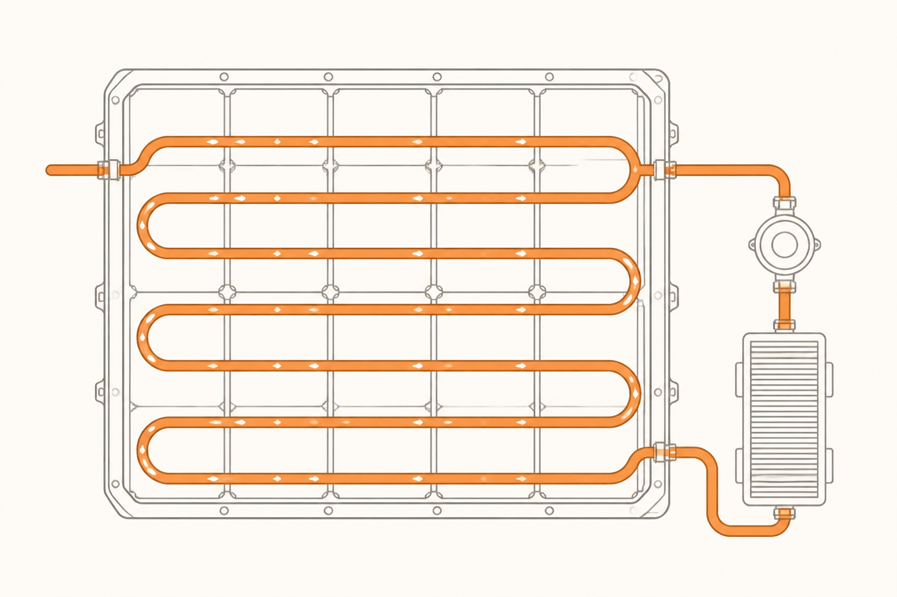

Sistema térmico: aire acondicionado para baterías
Si tuvieras que jugarte la longevidad de una batería a una sola variable, esa variable sería la temperatura. Más que la química, más que el número de ciclos, más que la velocidad de carga. Por eso un coche eléctrico moderno dedica un sistema entero, comparable en complejidad al de climatización del habitáculo, exclusivamente a mantener el pack de baterías dentro de un rango de temperatura estrecho. Esta píldora explica por qué importa tanto y cómo se hace.
La ventana óptima
Una celda de litio funciona bien en una franja sorprendentemente estrecha: aproximadamente de 20 °C a 40 °C. Por debajo de los 20 °C, los iones se mueven más despacio en el electrolito y la batería pierde potencia disponible (no autonomía total: la energía sigue ahí, pero sale más despacio). Por encima de los 40 °C, las reacciones químicas indeseadas se aceleran y el pack envejece más rápido. Por encima de los 60 °C, el envejecimiento acelerado pasa a daño permanente. Y por encima de los 80-90 °C en una sola celda, empieza el riesgo serio de fuga térmica.
Por debajo, pérdida temporal de potencia. Por encima, envejecimiento acelerado y riesgo creciente.
Mantener el pack dentro de esa franja es trabajo del sistema térmico. Y no es trivial: una batería en uso intenso (aceleración fuerte o carga rápida) genera calor por sí misma, así que si la dejaras a su aire en un día caluroso podría pasar de los 25 °C a los 50 °C en cuestión de minutos.
Refrigeración líquida: la solución dominante
Casi todos los coches eléctricos modernos refrigeran el pack con un circuito líquido. Funciona como el refrigerante de un coche de combustión, pero con dos diferencias importantes: el líquido pasa entre las celdas a través de placas o canales, no por un radiador remoto, y va a temperaturas más bajas (típicamente entre 15 y 30 °C, no los 90 °C del motor de gasolina).

El circuito hace dos cosas según haga falta: enfriar el pack si está caliente (desviando el refrigerante por un radiador exterior) o calentarlo si está frío (pasándolo por un calentador eléctrico o aprovechando el calor residual del motor o de los frenos eléctricos). Es bidireccional. Algunos coches tienen también una refrigeración por aire auxiliar para casos extremos, o sistemas de inmersión en aceite dieléctrico para deportivos exigentes — pero el pilar es siempre líquido.
Bomba de calor y precondicionamiento
Calentar y enfriar consume energía, y esa energía sale de la propia batería. Aquí entra una pieza inteligente: la bomba de calor. En lugar de generar calor desde cero (caro), usa el principio del aire acondicionado al revés: extrae calor del aire exterior o del motor o de la propia electrónica de potencia, y lo concentra donde haga falta. Una bomba de calor bien diseñada puede gastar 1 kWh para mover 3 o 4 kWh de calor — multiplica por tres la eficiencia.
El otro truco moderno se llama precondicionamiento. Si tienes programada una carga rápida en autopista a las 17:00, el coche puede empezar a calentar (o enfriar) el pack 15-20 minutos antes para que llegue a la temperatura óptima de carga. Eso se traduce en cargas mucho más rápidas: una batería bien acondicionada puede aceptar el doble de potencia que una fría.
Sin precondicionamiento, en invierno conectas un cargador rápido y el coche solo acepta una fracción de la potencia disponible mientras va calentando el pack en paralelo. Con precondicionamiento, llegas con el pack ya tibio y puedes aprovechar el cargador desde el primer minuto.
Fuga térmica: el escenario que hay que evitar
La fuga térmica (en inglés, thermal runaway) es la pesadilla. Una sola celda alcanza una temperatura crítica, sus reacciones químicas internas se descontrolan, libera calor que calienta a las celdas vecinas, las cuales también se descontrolan, y así sucesivamente. En segundos, una zona del pack puede pasar de 60 a varios cientos de grados.
Hay tres niveles de defensa:
Prevención. El BMS y el sistema térmico trabajan juntos para que ninguna celda llegue a la temperatura crítica. Esta es la mejor defensa: que el problema no empiece.
Contención. Si una celda entra en fuga térmica, la geometría del pack y los materiales aislantes intentan impedir que el calor pase a las vecinas. Algunos diseños recientes incluyen barreras cerámicas entre módulos o entre filas de celdas para frenar la propagación.
Evacuación. Si el evento se propaga, el pack tiene válvulas de venteo que dejan salir gases calientes hacia abajo (lejos del habitáculo), y el coche avisa a los ocupantes con tiempo. La normativa actual exige varios minutos entre la primera celda afectada y un escenario serio para el habitáculo.
La química importa aquí: las baterías LFP son notablemente más resistentes a la fuga térmica que las NMC. Es una de las razones por las que LFP gana terreno en flotas y vehículos donde la seguridad pesa más que la densidad.
Por qué importa también para la carga rápida
La carga rápida mete mucha energía en muy poco tiempo. Eso genera mucho calor. Sin un sistema térmico potente, la batería se calienta tanto que el BMS se ve obligado a reducir la potencia de carga para protegerla — el famoso "throttling". Por eso dos coches con la misma batería pueden cargar muy distinto: el que tiene mejor refrigeración puede sostener más potencia durante más tiempo.
Esto enlaza directamente con la píldora 9 (curva de carga) y la píldora 10 (800V): a más voltaje, más potencia, más calor instantáneo, más exigencia térmica. La sofisticación del sistema térmico es lo que separa un coche que "carga rápido en el papel" de uno que carga rápido de verdad, en autopista, en agosto.
Fácil¿Cuál es la franja de temperatura óptima para una batería de litio?
Aproximadamente entre 20 °C y 40 °C. Por debajo, baja la potencia disponible. Por encima, se acelera el envejecimiento y aumenta el riesgo de problemas térmicos.
Fácil¿Por qué los coches eléctricos modernos prefieren refrigeración líquida a refrigeración por aire?
Porque el líquido transporta el calor mucho más eficientemente que el aire (mayor capacidad calorífica y mejor contacto). Permite mantener el pack dentro de la ventana óptima incluso con cargas rápidas o aceleraciones fuertes. La refrigeración por aire solo aguanta packs pequeños y exigencias modestas.
Medio¿Por qué cargar en invierno suele ser más lento si no hay precondicionamiento?
Porque una batería fría no puede aceptar tanta potencia como una caliente: los iones se mueven más despacio y forzar más corriente la dañaría. El BMS limita la potencia de carga mientras el sistema térmico va calentando el pack. Con precondicionamiento, el pack llega caliente y se puede usar el cargador a tope desde el principio.
DifícilUna bomba de calor es más eficiente que un calentador resistivo. ¿Por qué? ¿Cuál es la trampa?
Una bomba de calor no genera calor: lo mueve de un sitio a otro (típicamente del aire exterior al refrigerante interior). Por eso puede entregar 3 o 4 kWh de calor por cada 1 kWh eléctrico que consume — un calentador resistivo entrega 1 kWh por cada 1 kWh consumido. La trampa: la eficiencia cae cuando el aire exterior está muy frío (porque cuesta más extraer calor de él), así que en climas extremos su ventaja se reduce. Aún así, gana al resistivo en casi todas las condiciones reales.